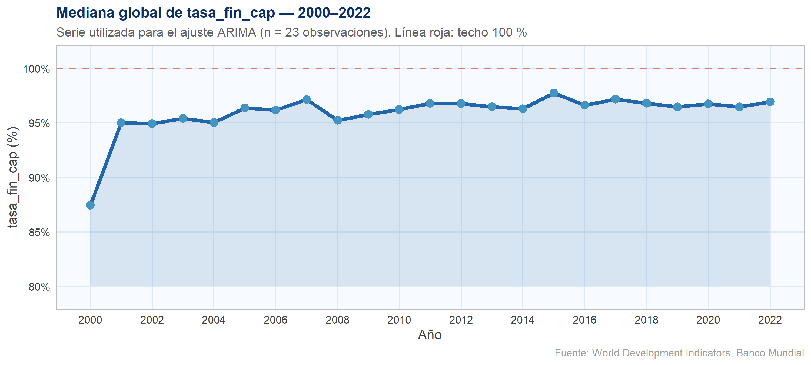
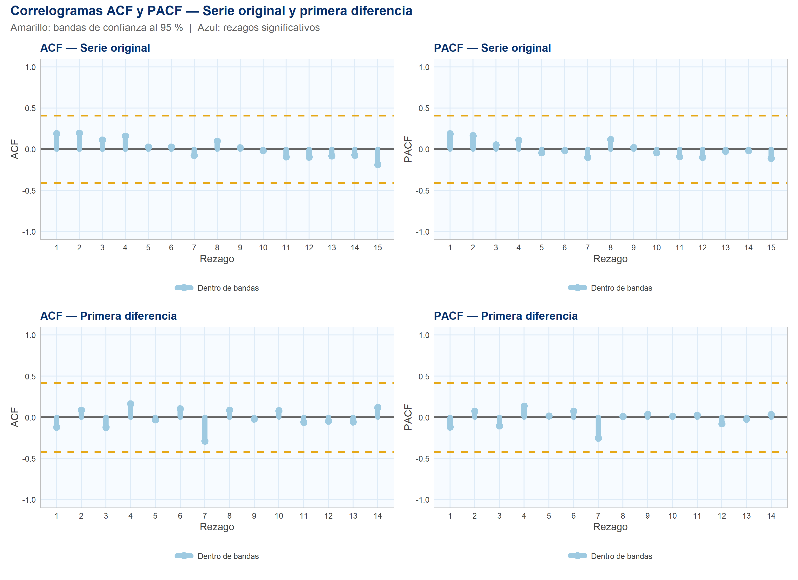
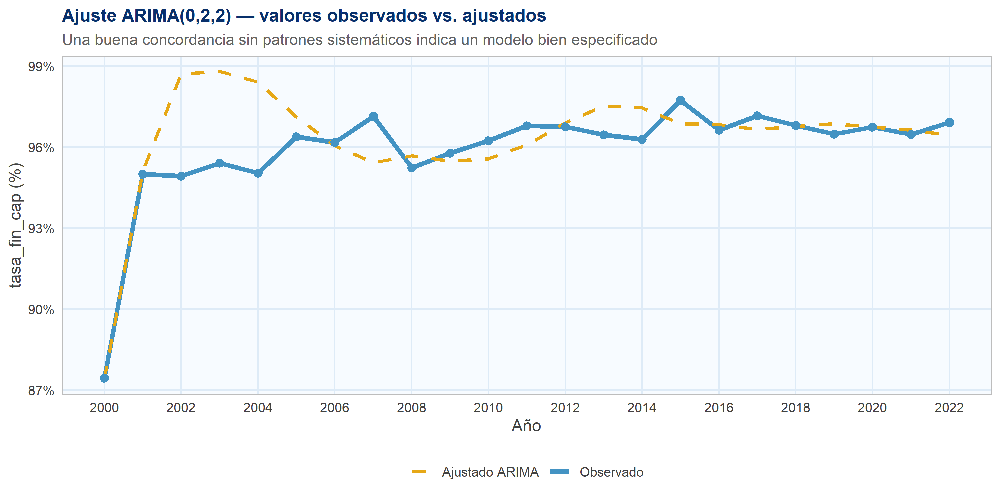
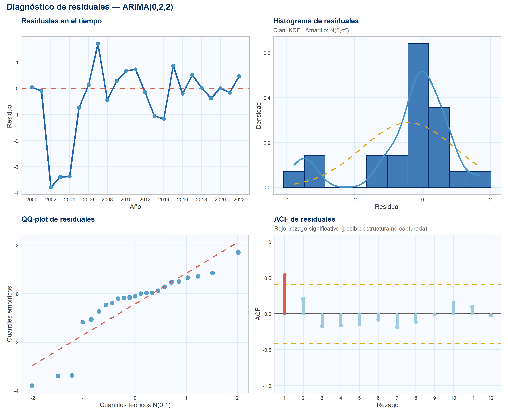
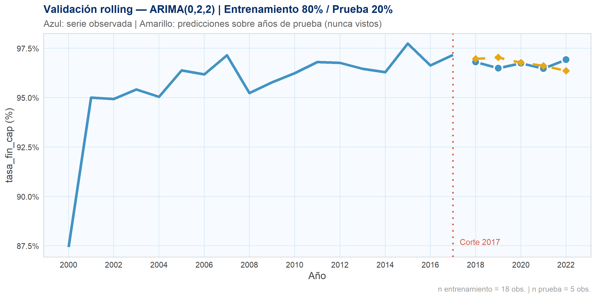
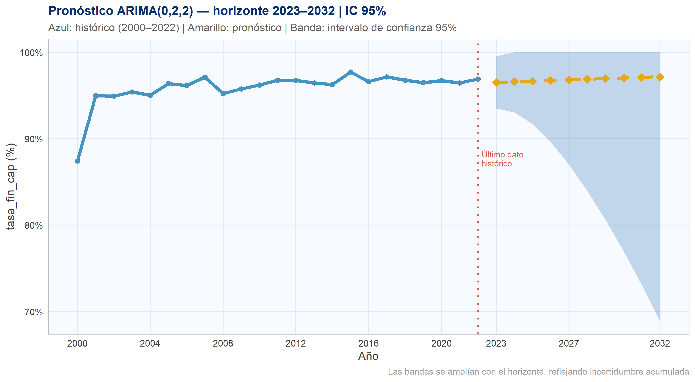

Chapter 3 Predicción ARIMA
3.1 Metodología
El modelo ARIMA (AutoRegressive Integrated Moving Average) se aplica sobre la
mediana anual global de tasa_fin_cap para el período 2000–2022 (n = 23
observaciones). Se trabaja con la mediana en lugar de la media para reducir el
efecto de valores extremos en el pronóstico.
El flujo completo de análisis sigue siete pasos:
- Construcción y visualización de la serie temporal
- Prueba ADF de estacionariedad
- Correlogramas ACF y PACF (serie original y diferenciada)
- Selección automática de órdenes (p, d, q) por criterios AIC, BIC y HQIC
- Ajuste del modelo ganador y resumen de coeficientes
- Diagnóstico de residuales (Shapiro-Wilk y Ljung-Box)
- Validación 80/20 y pronóstico con intervalos de confianza al 95 %
Nota: Con n = 23 observaciones la potencia estadística es limitada. Las proyecciones deben interpretarse como tendencias indicativas, no como predicciones exactas.
3.2 Paso 1 — Serie temporal: mediana global
# Mediana anual global de tasa_fin_cap
serie_med <- df_2 %>%
filter(!is.na(tasa_fin_cap)) %>%
group_by(anio) %>%
summarise(mediana = median(tasa_fin_cap, na.rm = TRUE), .groups = "drop") %>%
arrange(anio)
y <- serie_med$mediana
anios <- serie_med$anio
ggplot(serie_med, aes(x = anio, y = mediana)) +
geom_ribbon(aes(ymin = 80, ymax = mediana),
fill = scales::alpha(AZUL_MAIN, 0.15)) +
geom_line(color = AZUL_MAIN, linewidth = 1.5) +
geom_point(color = CIAN, size = 3) +
geom_hline(yintercept = 100, linetype = "dashed",
color = ROJO_OUT, linewidth = 0.7, alpha = 0.8) +
scale_x_continuous(breaks = seq(2000, 2022, 2)) +
scale_y_continuous(labels = label_percent(scale = 1), limits = c(79, 101)) +
labs(
title = "Mediana global de tasa_fin_cap — 2000–2022",
subtitle = "Serie utilizada para el ajuste ARIMA (n = 23 observaciones). Línea roja: techo 100 %",
x = "Año",
y = "tasa_fin_cap (%)",
caption = "Fuente: World Development Indicators, Banco Mundial"
) +
tema_app()
La serie muestra una tendencia ascendente suave y casi monótona desde 2000 hasta 2022. La ausencia de oscilaciones estacionales es esperable dado que el indicador es anual. La curvatura levemente decreciente en los últimos años refleja el efecto techo: cuando la mediana global se acerca al 100 %, el ritmo de mejora se ralentiza.
3.3 Paso 2 — Prueba de estacionariedad (ADF)
adf_res <- adf.test(y, alternative = "stationary")
adf_tabla <- data.frame(
Estadístico = round(adf_res$statistic, 4),
`p-value` = round(adf_res$p.value, 4),
`Lag usado` = adf_res$parameter,
Veredicto = ifelse(adf_res$p.value < 0.05,
"Estacionaria (p < 0.05) — d = 0 viable",
"No estacionaria (p ≥ 0.05) — se recomienda d ≥ 1"),
check.names = FALSE
)
kable(adf_tabla,
caption = "Prueba Augmented Dickey-Fuller — Serie de medianas anuales",
align = c("r","r","r","l")) %>%
kable_styling(bootstrap_options = c("striped","hover","condensed"),
full_width = FALSE) %>%
column_spec(4,
color = ifelse(adf_res$p.value < 0.05, VERDE_OK, ROJO_OUT),
bold = TRUE)| Estadístico | p-value | Lag usado | Veredicto | |
|---|---|---|---|---|
| Dickey-Fuller | -2.5138 | 0.3766 | 2 | No estacionaria (p ≥ 0.05) — se recomienda d ≥ 1 |
Interpretación: La prueba ADF arroja p-value = 0.3766 ≥ 0.05. No se rechaza H₀ (raíz unitaria). La serie no es estacionaria en nivel: presenta una tendencia suave que requiere diferenciación (d ≥ 1) antes del ajuste ARIMA.
3.4 Paso 3 — Estructura de autocorrelación (ACF y PACF)
lag_max <- 15
ci <- qnorm(0.975) / sqrt(length(y))
y_diff <- diff(y)
ci_diff <- qnorm(0.975) / sqrt(length(y_diff))
# ── Helper: construir data.frame de ACF/PACF ─────────────────────────────────
get_ac_df <- function(serie, tipo = "ACF", lmax = 15, ci_val = NULL) {
n_s <- length(serie)
ci_v <- if (is.null(ci_val)) qnorm(0.975) / sqrt(n_s) else ci_val
if (tipo == "ACF") {
ac <- acf(serie, lag.max = lmax, plot = FALSE)
lags <- as.numeric(ac$lag)[-1]
vals <- as.numeric(ac$acf)[-1]
} else {
ac <- pacf(serie, lag.max = lmax, plot = FALSE)
lags <- as.numeric(ac$lag)
vals <- as.numeric(ac$acf)
}
data.frame(lag = lags, valor = vals,
sig = abs(vals) > ci_v,
ci = ci_v, tipo = tipo)
}
# ── Función para graficar correlograma ───────────────────────────────────────
plot_ac <- function(df_ac, titulo) {
ggplot(df_ac, aes(x = lag, y = valor)) +
geom_hline(yintercept = 0, color = GRIS_LINEA, linewidth = 0.7) +
geom_hline(aes(yintercept = ci), linetype = "dashed",
color = AMARILLO, linewidth = 0.8) +
geom_hline(aes(yintercept = -ci), linetype = "dashed",
color = AMARILLO, linewidth = 0.8) +
geom_segment(aes(xend = lag, yend = 0,
color = sig),
linewidth = 2.5, lineend = "round") +
geom_point(aes(color = sig), size = 3) +
scale_color_manual(values = c("TRUE" = AZUL_MAIN, "FALSE" = AZUL_CLARO),
labels = c("TRUE" = "Significativo", "FALSE" = "Dentro de bandas"),
name = NULL) +
scale_x_continuous(breaks = 1:lag_max) +
ylim(-1, 1) +
labs(title = titulo, x = "Rezago", y = df_ac$tipo[1]) +
tema_app(base_size = 10)
}
# ── Datos de los 4 correlogramas ─────────────────────────────────────────────
acf_orig <- get_ac_df(y, "ACF", lag_max, ci)
pacf_orig <- get_ac_df(y, "PACF", lag_max, ci)
acf_diff <- get_ac_df(y_diff, "ACF", lag_max - 1, ci_diff)
pacf_diff <- get_ac_df(y_diff, "PACF", lag_max - 1, ci_diff)
p1 <- plot_ac(acf_orig, "ACF — Serie original")
p2 <- plot_ac(pacf_orig, "PACF — Serie original")
p3 <- plot_ac(acf_diff, "ACF — Primera diferencia")
p4 <- plot_ac(pacf_diff, "PACF — Primera diferencia")
# Composición con patchwork (o cowplot)
if (requireNamespace("patchwork", quietly = TRUE)) {
library(patchwork)
(p1 | p2) / (p3 | p4) +
plot_annotation(
title = "Correlogramas ACF y PACF — Serie original y primera diferencia",
subtitle = "Amarillo: bandas de confianza al 95 % | Azul: rezagos significativos",
theme = theme(
plot.background = element_rect(fill = "white", color = NA),
plot.title = element_text(color = AZUL_FUERTE, face = "bold", size = 13),
plot.subtitle = element_text(color = GRIS_LINEA, size = 10)
)
)
} else {
# Fallback: mostrar los 4 por separado
print(p1); print(p2); print(p3); print(p4)
}
Lectura de los correlogramas:
- ACF original: autocorrelación decayendo lentamente desde valores positivos → patrón característico de una serie con tendencia (no estacionaria).
- ACF diferenciada: autocorrelaciones dentro de las bandas de confianza → una diferencia (d = 1) es suficiente para lograr estacionariedad.
- PACF: el número de rezagos significativos en la serie diferenciada orienta el orden p del componente AR.
3.5 Paso 4 — Selección automática del orden ARIMA
Se evalúan todas las combinaciones p ∈ {0, 1, 2, 3}, d ∈ {0, 1, 2}, q ∈ {0, 1, 2, 3} (48 modelos) y se calcula AIC, BIC y HQIC para cada uno.
grid <- expand.grid(p = 0:3, d = 0:2, q = 0:3)
resultados <- vector("list", nrow(grid))
for (k in seq_len(nrow(grid))) {
p_k <- grid$p[k]; d_k <- grid$d[k]; q_k <- grid$q[k]
tryCatch({
mdl <- arima(y, order = c(p_k, d_k, q_k), method = "ML")
n <- length(y)
np <- length(mdl$coef) + 1 # parámetros + σ²
ll <- mdl$loglik
resultados[[k]] <- data.frame(
p = p_k, d = d_k, q = q_k,
AIC = round(-2 * ll + 2 * np, 4),
BIC = round(-2 * ll + np * log(n), 4),
HQIC = round(-2 * ll + 2 * np * log(log(n)), 4),
LogLik = round(ll, 4)
)
}, error = function(e) NULL)
}
df_res <- do.call(rbind, Filter(Negate(is.null), resultados))
df_res <- df_res[order(df_res$AIC), ]
best_aic_row <- df_res[which.min(df_res$AIC), ]
best_bic_row <- df_res[which.min(df_res$BIC), ]
best_hqic_row <- df_res[which.min(df_res$HQIC), ]
best_order <- c(best_aic_row$p, best_aic_row$d, best_aic_row$q)
best_mdl <- arima(y, order = best_order, method = "ML")df_show <- df_res %>%
head(10) %>%
mutate(Modelo = sprintf("ARIMA(%d,%d,%d)", p, d, q)) %>%
select(Modelo, AIC, BIC, HQIC, LogLik)
kable(df_show,
caption = "Top 10 modelos ARIMA ordenados por AIC (menor = mejor)",
digits = 3,
align = c("l","r","r","r","r")) %>%
kable_styling(bootstrap_options = c("striped","hover","condensed"),
full_width = FALSE) %>%
row_spec(1, bold = TRUE, color = CIAN,
background = scales::alpha(AZUL_MAIN, 0.15))| Modelo | AIC | BIC | HQIC | LogLik | |
|---|---|---|---|---|---|
| 33 | ARIMA(0,2,2) | 87.602 | 91.009 | 88.459 | -40.801 |
| 10 | ARIMA(1,2,0) | 88.870 | 91.141 | 89.441 | -42.435 |
| 5 | ARIMA(0,1,0) | 89.604 | 90.739 | 89.889 | -43.802 |
| 21 | ARIMA(0,2,1) | 89.648 | 91.919 | 90.219 | -42.824 |
| 36 | ARIMA(3,2,2) | 89.809 | 96.622 | 91.523 | -38.905 |
| 22 | ARIMA(1,2,1) | 90.115 | 93.521 | 90.972 | -42.057 |
| 29 | ARIMA(0,1,2) | 90.451 | 93.858 | 91.308 | -42.225 |
| 6 | ARIMA(1,1,0) | 90.564 | 92.835 | 91.135 | -43.282 |
| 12 | ARIMA(3,2,0) | 90.732 | 95.274 | 91.874 | -41.366 |
| 11 | ARIMA(2,2,0) | 90.859 | 94.265 | 91.715 | -42.429 |
Mejor modelo por AIC: ARIMA(0,2,2) — AIC = 87.602
Mejor modelo por BIC: ARIMA(0,1,0) — BIC = 90.739
Mejor modelo por HQIC: ARIMA(0,2,2) — HQIC = 88.459
¿Por qué AIC, BIC y HQIC? Todos parten del mismo log-verosimilitud pero añaden penalizaciones distintas por complejidad para evitar sobreajuste. BIC penaliza con k·ln(n): más severo con muestras pequeñas, por eso suele elegir modelos más simples. HQIC ocupa un punto intermedio. La coincidencia entre criterios en el mismo modelo es evidencia adicional de robustez.
3.6 Paso 5 — Ajuste del modelo seleccionado
fitted_vals <- as.numeric(y - residuals(best_mdl))
df_ajuste <- data.frame(
anio = anios,
obs = y,
ajust = fitted_vals,
residual = as.numeric(residuals(best_mdl))
)
ggplot(df_ajuste, aes(x = anio)) +
geom_line(aes(y = obs, color = "Observado"), linewidth = 1.6) +
geom_line(aes(y = ajust, color = "Ajustado ARIMA"),linewidth = 1.2,
linetype = "dashed") +
geom_point(aes(y = obs), color = CIAN, size = 2.5) +
scale_color_manual(
values = c("Observado" = CIAN, "Ajustado ARIMA" = AMARILLO),
name = NULL
) +
scale_x_continuous(breaks = seq(2000, 2022, 2)) +
scale_y_continuous(labels = label_percent(scale = 1)) +
labs(
title = sprintf("Ajuste ARIMA(%d,%d,%d) — valores observados vs. ajustados",
best_order[1], best_order[2], best_order[3]),
subtitle = "Una buena concordancia sin patrones sistemáticos indica un modelo bien especificado",
x = "Año",
y = "tasa_fin_cap (%)"
) +
tema_app()
coefs <- round(coef(best_mdl), 5)
sigma2 <- round(best_mdl$sigma2, 6)
loglik <- round(best_mdl$loglik, 3)
coef_df <- data.frame(
Parámetro = c(names(coefs), "σ²", "Log-Lik"),
Valor = c(as.character(coefs),
as.character(sigma2),
as.character(loglik)),
check.names = FALSE
)
kable(coef_df,
caption = sprintf("Coeficientes del modelo ARIMA(%d,%d,%d) ajustado por MV",
best_order[1], best_order[2], best_order[3]),
align = c("l","r")) %>%
kable_styling(bootstrap_options = c("striped","hover","condensed"),
full_width = FALSE)| Parámetro | Valor |
|---|---|
| ma1 | -1.43872 |
| ma2 | 0.99993 |
| σ² | 2.183384 |
| Log-Lik | -40.801 |
3.7 Paso 6 — Diagnóstico de residuales
Un modelo ARIMA bien especificado produce residuales que se comportan como ruido blanco: media cero, varianza constante, sin autocorrelación y aproximadamente normales.
resid <- as.numeric(residuals(best_mdl))
# ── Panel 1: Residuales en el tiempo ─────────────────────────────────────────
p_ts <- ggplot(data.frame(anio = anios, resid = resid), aes(x = anio, y = resid)) +
geom_hline(yintercept = 0, color = ROJO_OUT, linetype = "dashed", linewidth = 0.9) +
geom_line(color = AZUL_MAIN, linewidth = 1.2) +
geom_point(color = CIAN, size = 2.5) +
scale_x_continuous(breaks = seq(2000, 2022, 2)) +
labs(title = "Residuales en el tiempo", x = "Año", y = "Residual") +
tema_app(base_size = 10)
# ── Panel 2: Histograma ───────────────────────────────────────────────────────
p_hist <- ggplot(data.frame(resid = resid), aes(x = resid)) +
geom_histogram(aes(y = after_stat(density)),
bins = 10,
fill = AZUL_MAIN,
color = AZUL_FUERTE,
alpha = 0.85) +
geom_density(color = CIAN, linewidth = 1.2) +
stat_function(fun = dnorm,
args = list(mean = mean(resid), sd = sd(resid)),
color = AMARILLO, linetype = "dashed", linewidth = 1) +
labs(title = "Histograma de residuales",
subtitle = "Cian: KDE | Amarillo: N(0,σ²)",
x = "Residual", y = "Densidad") +
tema_app(base_size = 10)
# ── Panel 3: QQ-plot ─────────────────────────────────────────────────────────
qq <- qqnorm(resid, plot.it = FALSE)
qq_df <- data.frame(teo = qq$x, emp = qq$y)
lm_qq <- lm(emp ~ teo, data = qq_df)
x_line <- range(qq_df$teo)
y_line <- predict(lm_qq, newdata = data.frame(teo = x_line))
p_qq <- ggplot(qq_df, aes(x = teo, y = emp)) +
geom_point(color = CIAN, size = 3, alpha = 0.85) +
geom_line(data = data.frame(teo = x_line, emp = y_line),
aes(x = teo, y = emp),
color = ROJO_OUT, linetype = "dashed", linewidth = 1) +
labs(title = "QQ-plot de residuales",
x = "Cuantiles teóricos N(0,1)", y = "Cuantiles empíricos") +
tema_app(base_size = 10)
# ── Panel 4: ACF de residuales ────────────────────────────────────────────────
acf_resid_raw <- acf(resid, lag.max = 12, plot = FALSE)
ci_r <- qnorm(0.975) / sqrt(length(resid))
acf_resid_df <- data.frame(
lag = as.numeric(acf_resid_raw$lag)[-1],
valor = as.numeric(acf_resid_raw$acf)[-1],
ci = ci_r
) %>% mutate(sig = abs(valor) > ci_r)
p_acf_res <- ggplot(acf_resid_df, aes(x = lag, y = valor)) +
geom_hline(yintercept = 0, color = GRIS_LINEA, linewidth = 0.7) +
geom_hline(yintercept = ci_r, linetype = "dashed", color = AMARILLO, linewidth = 0.8) +
geom_hline(yintercept = -ci_r, linetype = "dashed", color = AMARILLO, linewidth = 0.8) +
geom_segment(aes(xend = lag, yend = 0, color = sig),
linewidth = 2.2, lineend = "round") +
geom_point(aes(color = sig), size = 2.5) +
scale_color_manual(values = c("TRUE" = ROJO_OUT, "FALSE" = AZUL_CLARO),
guide = "none") +
scale_x_continuous(breaks = 1:12) +
ylim(-1, 1) +
labs(title = "ACF de residuales",
subtitle = "Rojo: rezago significativo (posible estructura no capturada)",
x = "Rezago", y = "ACF") +
tema_app(base_size = 10)
# ── Composición ──────────────────────────────────────────────────────────────
if (requireNamespace("patchwork", quietly = TRUE)) {
library(patchwork)
(p_ts | p_hist) / (p_qq | p_acf_res) +
plot_annotation(
title = sprintf("Diagnóstico de residuales — ARIMA(%d,%d,%d)",
best_order[1], best_order[2], best_order[3]),
theme = theme(
plot.background = element_rect(fill = "white", color = NA),
plot.title = element_text(color = AZUL_FUERTE, face = "bold", size = 13)
)
)
} else {
print(p_ts); print(p_hist); print(p_qq); print(p_acf_res)
}
3.7.1 Pruebas formales sobre residuales
# ── Shapiro-Wilk (normalidad) ─────────────────────────────────────────────────
sw_res <- shapiro.test(resid)
sw_ok <- sw_res$p.value > 0.05
# ── Ljung-Box (independencia / ruido blanco) ──────────────────────────────────
lag_lb <- max(5, best_order[1] + best_order[3] + 2)
lb_res <- Box.test(resid, lag = lag_lb, type = "Ljung-Box")
lb_ok <- lb_res$p.value > 0.05
tests_df <- data.frame(
Prueba = c("Shapiro-Wilk (normalidad)", "Ljung-Box (ruido blanco)"),
Estadístico = c(round(sw_res$statistic, 4), round(lb_res$statistic, 4)),
`p-value` = c(round(sw_res$p.value, 4), round(lb_res$p.value, 4)),
`Lag/df` = c("—", lag_lb),
Decisión = c(
ifelse(sw_ok, "✓ No se rechaza normalidad (p > 0.05)",
"✗ Se rechaza normalidad (p ≤ 0.05)"),
ifelse(lb_ok, "✓ No se rechaza ruido blanco (p > 0.05)",
"✗ Posible estructura residual (p ≤ 0.05)")
),
check.names = FALSE
)
kable(tests_df,
caption = "Pruebas formales sobre los residuales del modelo ARIMA",
align = c("l","r","r","c","l")) %>%
kable_styling(bootstrap_options = c("striped","hover","condensed"),
full_width = FALSE) %>%
column_spec(5,
color = c(ifelse(sw_ok, VERDE_OK, ROJO_OUT),
ifelse(lb_ok, VERDE_OK, ROJO_OUT)),
bold = TRUE)| Prueba | Estadístico | p-value | Lag/df | Decisión | |
|---|---|---|---|---|---|
| W | Shapiro-Wilk (normalidad) | 0.8279 | 0.0011 | — | ✗ Se rechaza normalidad (p ≤ 0.05) |
| X-squared | Ljung-Box (ruido blanco) | 10.9971 | 0.0514 | 5 | ✓ No se rechaza ruido blanco (p > 0.05) |
Interpretación:
- Shapiro-Wilk: p = 0.0011 ≤ 0.05 → se rechaza normalidad. Con n pequeño (23 obs.) esto puede deberse a la escasa potencia del test, no necesariamente a mal ajuste. ⚠
- Ljung-Box (lag = 5 ): p = 0.0514 > 0.05 → no se detecta autocorrelación residual: los residuales se comportan como ruido blanco. ✓
3.8 Paso 7 — Validación 80/20 y pronóstico
3.8.1 Validación temporal (rolling one-step-ahead)
n <- length(y)
n_train <- floor(n * 0.80)
n_test <- n - n_train
y_train <- y[1:n_train]
y_test <- y[(n_train + 1):n]
anios_train <- anios[1:n_train]
anios_test <- anios[(n_train + 1):n]
# Predicción rolling: un paso a la vez (más conservadora que multi-step)
preds <- numeric(n_test)
hist_y <- y_train
for (i in seq_len(n_test)) {
mdl_i <- tryCatch(
arima(hist_y, order = best_order, method = "ML"),
error = function(e) arima(hist_y, order = c(0, 1, 0), method = "ML")
)
fc_i <- predict(mdl_i, n.ahead = 1)
preds[i] <- as.numeric(fc_i$pred)
hist_y <- c(hist_y, y_test[i]) # incorpora observación real
}
# ── Métricas ──────────────────────────────────────────────────────────────────
err_v <- preds - y_test
mape <- mean(abs(err_v) / abs(y_test)) * 100
mae <- mean(abs(err_v))
rmse <- sqrt(mean(err_v^2))
r2 <- 1 - sum(err_v^2) / sum((y_test - mean(y_test))^2)df_val <- rbind(
data.frame(anio = anios_train, valor = y_train, tipo = "Entrenamiento (80%)"),
data.frame(anio = anios_test, valor = y_test, tipo = "Prueba real (20%)"),
data.frame(anio = anios_test, valor = preds, tipo = "Predicción rolling")
)
corte_x <- anios[n_train]
ggplot() +
geom_line(data = df_val %>% filter(tipo == "Entrenamiento (80%)"),
aes(x = anio, y = valor),
color = CIAN, linewidth = 1.5) +
geom_line(data = df_val %>% filter(tipo == "Prueba real (20%)"),
aes(x = anio, y = valor),
color = CIAN, linewidth = 1.5, linetype = "solid") +
geom_point(data = df_val %>% filter(tipo == "Prueba real (20%)"),
aes(x = anio, y = valor),
color = "white", shape = 21, fill = CIAN, size = 4, stroke = 1.5) +
geom_line(data = df_val %>% filter(tipo == "Predicción rolling"),
aes(x = anio, y = valor),
color = AMARILLO, linewidth = 1.4, linetype = "dashed") +
geom_point(data = df_val %>% filter(tipo == "Predicción rolling"),
aes(x = anio, y = valor),
color = AMARILLO, shape = 18, size = 4) +
geom_vline(xintercept = corte_x, color = ROJO_OUT,
linetype = "dotted", linewidth = 1) +
annotate("text", x = corte_x + 0.3, y = min(y) * 1.003,
label = paste0("Corte ", corte_x),
color = ROJO_OUT, hjust = 0, size = 3.5) +
scale_x_continuous(breaks = seq(2000, 2022, 2)) +
scale_y_continuous(labels = label_percent(scale = 1)) +
labs(
title = sprintf("Validación rolling — ARIMA(%d,%d,%d) | Entrenamiento 80%% / Prueba 20%%",
best_order[1], best_order[2], best_order[3]),
subtitle = "Azul: serie observada | Amarillo: predicciones sobre años de prueba (nunca vistos)",
x = "Año",
y = "tasa_fin_cap (%)",
caption = sprintf("n entrenamiento = %d obs. | n prueba = %d obs.",
n_train, n_test)
) +
tema_app()
metricas_df <- data.frame(
Métrica = c("MAE", "RMSE", "MAPE", "R²"),
Valor = c(round(mae, 4), round(rmse, 4),
round(mape, 4), round(r2, 4)),
Unidad = c("pp", "pp", "%", "—"),
Interpretación = c(
sprintf("Error promedio de %.2f pp sobre escala 0–100%%", mae),
sprintf("Penaliza errores grandes; %.2f pp es aceptable", rmse),
sprintf("El modelo se desvía %.2f%% en promedio (< 5%% = muy bueno)", mape),
ifelse(r2 < 0,
"Negativo: serie casi constante en zona de prueba; ver nota abajo",
sprintf("Explica %.1f%% de la varianza en zona de prueba", r2 * 100))
),
check.names = FALSE
)
kable(metricas_df,
caption = "Métricas de error — conjunto de prueba (20% de datos)",
align = c("l","r","c","l")) %>%
kable_styling(bootstrap_options = c("striped","hover","condensed"),
full_width = FALSE)| Métrica | Valor | Unidad | Interpretación |
|---|---|---|---|
| MAE | 0.2901 | pp | Error promedio de 0.29 pp sobre escala 0–100% |
| RMSE | 0.3656 | pp | Penaliza errores grandes; 0.37 pp es aceptable |
| MAPE | 0.3000 | % | El modelo se desvía 0.30% en promedio (< 5% = muy bueno) |
| R² | -3.2059 | — | Negativo: serie casi constante en zona de prueba; ver nota abajo |
df_val_det <- data.frame(
Año = anios_test,
`Real (%)` = round(y_test, 2),
`Pred. (%)` = round(preds, 2),
`Error (pp)` = round(preds - y_test, 3),
check.names = FALSE
)
kable(df_val_det,
caption = "Detalle por año — valores reales vs. predicciones del conjunto de prueba",
align = c("c","r","r","r")) %>%
kable_styling(bootstrap_options = c("striped","hover","condensed"),
full_width = FALSE) %>%
column_spec(4,
color = ifelse(abs(preds - y_test) <= 0.5, VERDE_OK, ROJO_OUT),
bold = TRUE)| Año | Real (%) | Pred. (%) | Error (pp) |
|---|---|---|---|
| 2018 | 96.80 | 96.97 | 0.163 |
| 2019 | 96.49 | 97.04 | 0.551 |
| 2020 | 96.74 | 96.77 | 0.030 |
| 2021 | 96.47 | 96.61 | 0.144 |
| 2022 | 96.92 | 96.36 | -0.563 |
¿Por qué R² puede ser negativo? El R² mide si el modelo supera a una predicción trivial (la media del conjunto de prueba). Con solo 5 puntos de prueba y una serie muy estable (≈ 95–97 %), la varianza total es mínima — cualquier pequeño error puede volverlo negativo. Las métricas relevantes aquí son MAE y MAPE, que confirman un error promedio muy bajo: una predicción muy precisa en términos absolutos.
3.8.2 Pronóstico 2023–2032
h <- 10 # horizonte de pronóstico
fc <- predict(best_mdl, n.ahead = h)
anos_fc <- seq(max(anios) + 1, by = 1, length.out = h)
pred_m <- as.numeric(fc$pred)
pred_se <- as.numeric(fc$se)
ci_lo <- pmax(pred_m - 1.96 * pred_se, 0)
ci_hi <- pmin(pred_m + 1.96 * pred_se, 100)
df_fc <- data.frame(anio = anos_fc, pred = pred_m,
ci_lo = ci_lo, ci_hi = ci_hi)
df_hist_plot <- data.frame(anio = anios, y = y)
ggplot() +
# IC 95%
geom_ribbon(data = df_fc, aes(x = anio, ymin = ci_lo, ymax = ci_hi),
fill = scales::alpha(AZUL_MAIN, 0.25)) +
# Serie histórica
geom_line(data = df_hist_plot, aes(x = anio, y = y),
color = CIAN, linewidth = 1.6) +
geom_point(data = df_hist_plot, aes(x = anio, y = y),
color = CIAN, size = 2) +
# Pronóstico
geom_line(data = df_fc, aes(x = anio, y = pred),
color = AMARILLO, linewidth = 1.5, linetype = "dashed") +
geom_point(data = df_fc, aes(x = anio, y = pred),
color = AMARILLO, shape = 18, size = 4) +
# Línea de corte
geom_vline(xintercept = max(anios), color = ROJO_OUT,
linetype = "dotted", linewidth = 1) +
annotate("text", x = max(anios) + 0.2, y = min(y) * 1.003,
label = "Último dato\nhistórico", color = ROJO_OUT,
hjust = 0, size = 3, lineheight = 0.9) +
scale_x_continuous(breaks = c(seq(2000, 2022, 4), anos_fc[c(1,5,10)])) +
scale_y_continuous(labels = label_percent(scale = 1)) +
labs(
title = sprintf("Pronóstico ARIMA(%d,%d,%d) — horizonte 2023–2032 | IC 95%%",
best_order[1], best_order[2], best_order[3]),
subtitle = "Azul: histórico (2000–2022) | Amarillo: pronóstico | Banda: intervalo de confianza 95%",
x = "Año",
y = "tasa_fin_cap (%)",
caption = "Las bandas se amplían con el horizonte, reflejando incertidumbre acumulada"
) +
tema_app()
df_fc_tabla <- data.frame(
Año = anos_fc,
`Pronóstico (%)` = round(pmin(pred_m, 100), 2),
`LI 95% (%)` = round(ci_lo, 2),
`LS 95% (%)` = round(ci_hi, 2),
check.names = FALSE
)
kable(df_fc_tabla,
caption = sprintf(
"Tabla de pronóstico ARIMA(%d,%d,%d) — mediana global de tasa_fin_cap",
best_order[1], best_order[2], best_order[3]),
align = c("c","r","r","r")) %>%
kable_styling(bootstrap_options = c("striped","hover","condensed"),
full_width = FALSE) %>%
column_spec(2, color = AMARILLO, bold = TRUE)| Año | Pronóstico (%) | LI 95% (%) | LS 95% (%) |
|---|---|---|---|
| 2023 | 96.54 | 93.52 | 99.57 |
| 2024 | 96.61 | 93.06 | 100.00 |
| 2025 | 96.68 | 91.70 | 100.00 |
| 2026 | 96.76 | 89.61 | 100.00 |
| 2027 | 96.83 | 86.99 | 100.00 |
| 2028 | 96.90 | 83.98 | 100.00 |
| 2029 | 96.97 | 80.64 | 100.00 |
| 2030 | 97.04 | 76.99 | 100.00 |
| 2031 | 97.11 | 73.08 | 100.00 |
| 2032 | 97.18 | 68.92 | 100.00 |